Im Menüpunkt
1 Vorlagen
1 Beleg Pro
1 Beleg Pro - Import
kann ein bereits abgespeicherter Belegeingang (XML-Paket) anhand der Fallnummer wieder geöffnet und abgeändert/bearbeitet werden. Die Funktionalitäten sind ident mit dem Fenster "Beleg Pro - Import", welches sich direkt im "Beleg Pro - Wizard" öffnet.
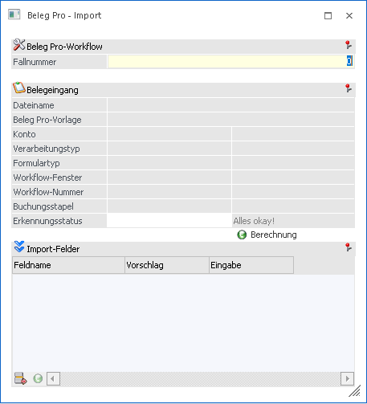
Ø Fallnummer
Hier kann eine Fallnummer eingetragen werden, um die bestehenden Datensätze zu laden.
Hinweis
Wenn das Fenster "Beleg Pro - Import" direkt aus dem "Beleg Pro - Wizard" geöffnet wurde, wird die Fallnummer bereits automatisch übergeben und kann nicht manuell angepasst bzw. eingegeben werden.
Nachdem die Fallnummer eingetragen wurde bzw. man direkte über den Wizard in dieses Fenster kommt, werden die erkannte bzw. gespeicherten Datensätze (XML-Paket) angezeigt.
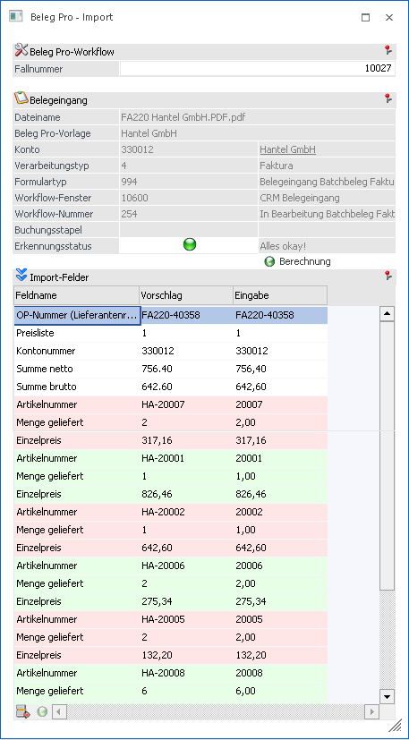
Hier können die erkannten Felder bearbeitet werden, indem man sich in das Feld innerhalb der Spalte "Eingabe" stellt. Es ist ebenso möglich, Werte aus der Vorschau mittels "Bestreichung" zu übernehmen.
Wenn komplett neue Felder eingefügt werden sollen, dann muss die letzte Zeile aufgesucht werden und anschließend in die nächste freie Zeile klicken.
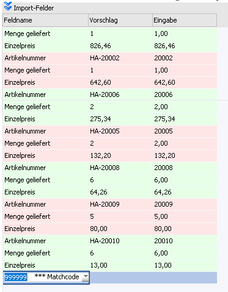
In diesem Drop-Down Menü können dann die Buchungs- bzw. Belegvariablen ausgesucht bzw. der Matchcode mittels Klick auf den Eintrag "999999 *** Matchcode ***", geöffnet werden.
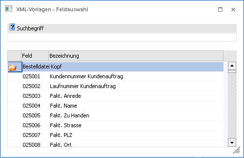
Im Matchcode stehen anschließend alle Buchungs- bzw. Belegvariablen zur Verfügung und können übernommen werden. Zum Beispiel die Variable "Textzeile 1"
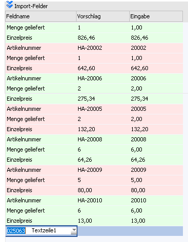
Anschließend stellt man den Fokus in die Spalte "Eingabe" und kann einen freien Text erfassen bzw. durch "Bestreichen" können Texte aus der Dokumenten-Vorschau übernommen werden.
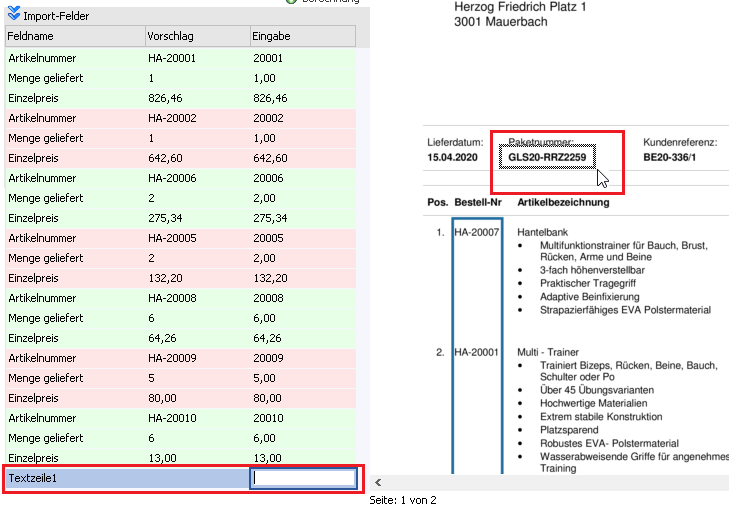
Der erkannte Wert/Text sollte danach im Feld "Eingabe" ersichtlich sein.
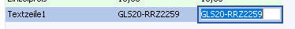
Nachfolgend werden die einzelnen Speziellen Funktionen anhand der Buttons beschrieben.
Buttons
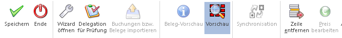
Ø Speichern
Speichert die Eingaben des Fensters "Beleg Pro - Import" ab und schließt das Fenster. Die Werte werden im Hintergrund in einem XML-Paket, welcher mit dem CRM-Fall verknüpft ist, gespeichert.
Ø Ende
Schließt das Fenster und verwirft alle bisher unternommen Änderungen bzw. Eingaben
Ø Wizard öffnen
Mithilfe dieses Buttons kann der Wizard nochmals geöffnet werden, um eventuell noch einen anderen Formulartyp bzw. Beleg Pro Vorlage auszuwählen.
Hinweis
Der Button "Wizard öffnen" ist nur so lange aktiv, bis der Button "Delegation für Prüfung" angewählt wurde und somit ein Folgeschritt geschrieben wurde.
Ø Delegation für Prüfung
Dieser Button muss angewählt werden, damit die Buchung bzw. der Beleg fertig gestellt und an die FIBU/FAKT übergeben werden kann.
Hier wird ein fixer Folgeschritt - 260 "in Prüfung Buchung", 263 "in Prüfung Batchbeleg Lieferschein" oder 264 "in Prüfung Batchbeleg Faktura" - je nachdem, welcher Verarbeitungstyp und Belegstufe im Wizard gewählt wurde.
Ø Buchungen bzw. Beleg importieren
Wenn zuvor bereits der Folgeschritt mittels Button "Delegation für Prüfung" geschrieben wurde, kann die Buchung an den Stapel übergeben oder der Beleg in der Fakturierung gedruckt werden. Falls es hier einen Fehler geben sollte, dann ist dieser im "Erkennungsstatus" ersichtlich. (z.B: kein "KontoSoll" eingetragen bzw. "Artikel existiert nicht")
Hinweis
Der Erkennungsstatus wird durch ein Ampelzeichen abgebildet. Daneben befindet sich ein Beschreibungstext, welcher als ausgegrauter Drilldown klickbar ist und somit Detailinformationen über den erkannten Status und die Position etwaiger Fehlerquellen ausgibt.
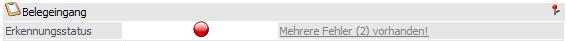
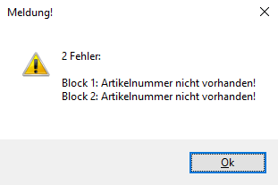
Die hier aufgeführte Meldung hebt hervor, dass sich in den beiden vorhandenen Blöcken der Belegmitte Artikelnummern befinden, bei denen es kein Match hinsichtlich der eingepflegten Lieferantenartikelnummern gibt.
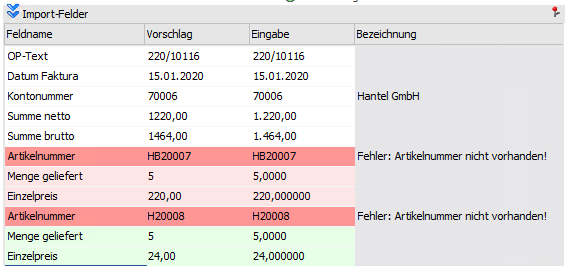
Diese beiden Fehler müssen bereinigt werden, um so die Buchung, bzw. den Beleg fertig zu stellen.
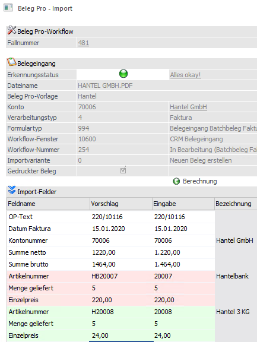
Ø Beleg-Vorschau
Wenn es sich beim gerade geöffneten XML-Paket im Fenster "Beleg Pro - Import" um einen Eingang mit dem Verarbeitungstyp "1 Batchbeleg" handelt, kann eine Beleg-Vorschau ausgegeben werden, bevor der Beleg tatsächlich gedruckt wird. Hierbei ist es wichtig, dass bereits alle Felder (Artikelnummer) richtig befüllt sind, da andernfalls eine dementsprechende Meldung erscheint.
Diese Funktion kann genutzt werden, um beispielsweise den Endbetrag der Eingangsrechnung mit der zu druckenden zu vergleichen.
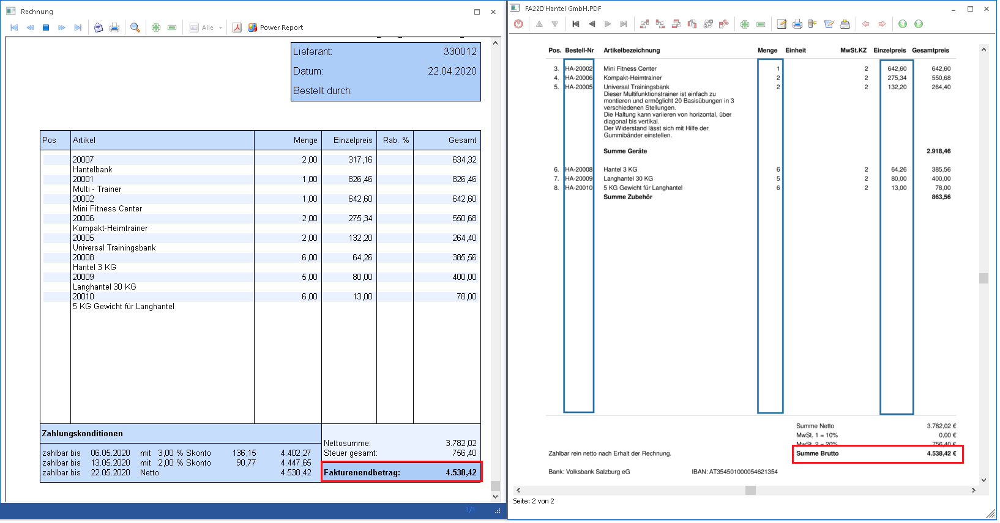
Ø Vorschau
Mithilfe dieses Buttons kann die Dokumenten-Vorschau des Eingangsbelegs aktiviert bzw. deaktiviert werden. Ein blau hinterlegter Button ist aktiv geschalten.
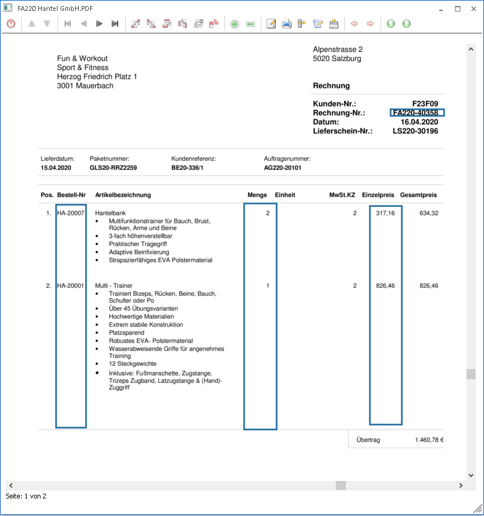
Ø Synchronisation
Dieser Button ist nur beim Druck von FAKT-Belegen (Verarbeitungstyp "1 Batchbeleg") aktiv geschalten, da hier die erkannten Werte in der Tabelle mit der Eingangsrechnung in der Vorschau verglichen werden können.
Wenn der Button Aktiv geschalten wird (blau hinterlegt) ist der Synchronisationsmodus aktiviert. Falls anschließend auf einen Eintrag in der Tabelle des Fensters "Beleg Pro - Import" geklickt wird, wird diese im Dokument auf der richtigen Seite mit einem rot markierten Viereck angezeigt.
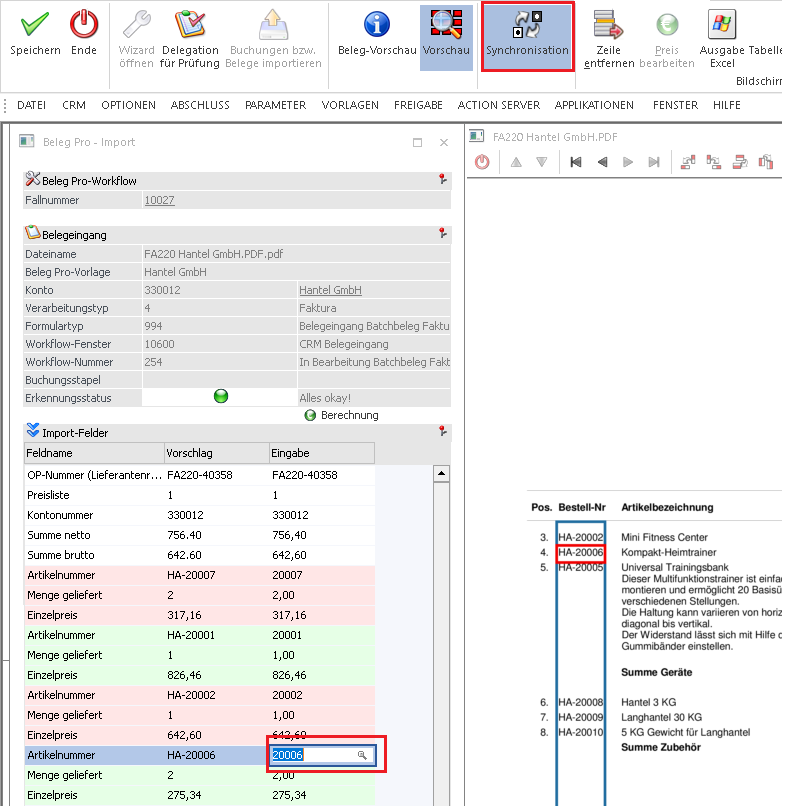
Diese Funktion kann sowohl den Tabelleneintrag in der Vorschau anzeigen als auch den Eintrag in der Vorschau in der Tabelle anzeigen. Somit kann mit aktiviertem Button "Synchronisation" ein Eintrag in der Vorschau anwählen und der Eintrag wird in der Tabelle in den Fokus genommen.
Hinweis
Damit Felder wieder bearbeitet bzw. neu eingefügt werden können, muss der Button "Synchronisation" wieder deaktiviert geschalten werden.
Tabellen-Buttons
Ø Block hinzufügen
Bei Anwahl dieses Buttons wird entweder ein Buchungsblock mit den Variablen "Konto-Soll", "Betrag", "Steuerzeile" und "Steuerbetrag" oder – bei Beleg Pro Batchbeleg Eingängen – die Variablen "Artikelnummer", "Einzelpreis" und "Menge geliefert" hinzu.
Ø Block-Zeile hinzufügen
Wenn der Fokus innerhalb einer Blockzeile (rot, grün gefärbt) steht, kann mithilfe dieses Buttons eine Variable/Feld zu diesem Block eingefügt werden. Diese eingefügte Zeile hat anschließend die Verbindung zum Block, daher wird dies auch bei der Übergabe an den Buchungsstapel berücksichtigt und für die einzelnen Block (Splitzeile) berücksichtigt. (z.B. eine Kostenart und Kostenstelle zu einem Buchungsblock hinzufügen)
Ø Zeile hinzufügen
Fügt in der (im Fokus stehenden) Zeile innerhalb der Importfelder eine Zeile hinzu.
Ø Zeile entfernen
Entfernt die im Fokus stehende Zeile innerhalb der Tabelle.
Ø Preis bearbeiten
Diese Funktion ist nur bei Batchbeleg Beleg Pro Eingängen aktiv geschalten und wenn der Fokus auf der Variable "Einzelpreis" eines Artikel-Blocks steht. Wenn dieser Button anschließend angewählt wird, wird mit dem Kontext der Artikelnummer der Artikelstamm geöffnet und der Preiseintrag als Vorschlag in die Preistabelle geschrieben.